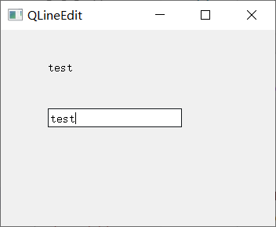
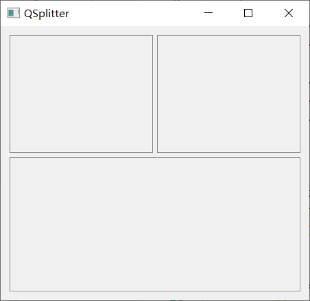
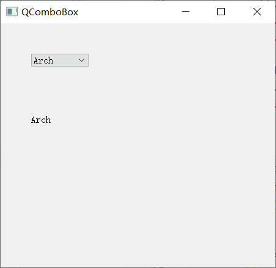

翻译自原文：PyQt5 widgets II
翻译时间 2020 年 8 月 20 日
在本章中，我们继续介绍 PyQt5 部件。我们将涵盖QPixmap、QLineEdit、QSplitter、QComboBox。
PyQt5 QPixmap
QPixmap是用于处理图像的部件之一。它针对在屏幕上显示图像进行了优化。在我们的代码示例中，我们将使用QPixmap在窗口上显示图像。
pixmap.py
from PyQt5.QtWidgets import (QWidget, QHBoxLayout,
QLabel, QApplication)
from PyQt5.QtGui import QPixmap
import sys
from PyQt5.QtCore import QFileInfo
class Example(QWidget):
def __init__(self):
super().__init__()
self.initUI()
def initUI(self):
hbox = QHBoxLayout(self)
root = QFileInfo(__file__).absolutePath()
pixmap = QPixmap(root + '/sid.jpg')
lbl = QLabel(self)
lbl.setPixmap(pixmap)
hbox.addWidget(lbl)
self.setLayout(hbox)
self.move(300, 200)
self.setWindowTitle('Sid')
self.show()
def main():
app = QApplication(sys.argv)
ex = Example()
sys.exit(app.exec_())
if __name__ == '__main__':
main()
|
在我们的示例中，我们在窗口上显示图像。
pixmap = QPixmap('sid.jpg')
|
我们创建一个QPixmap对象。它将文件的名称作为参数。
lbl = QLabel(self)
lbl.setPixmap(pixmap)
|
我们将像素图放入QLabel部件中。
PyQt5 QLineEdit
QLineEdit是允许输入和编辑单行纯文本的部件。有撤消和重做，剪切和粘贴，以及拖放功能的部件。
line_edit.py
import sys
from PyQt5.QtWidgets import (QWidget, QLabel,
QLineEdit, QApplication)
class Example(QWidget):
def __init__(self):
super().__init__()
self.initUI()
def initUI(self):
self.lbl = QLabel(self)
qle = QLineEdit(self)
qle.move(60, 100)
self.lbl.move(60, 40)
qle.textChanged[str].connect(self.onChanged)
self.setGeometry(300, 300, 350, 250)
self.setWindowTitle('QLineEdit')
self.show()
def onChanged(self, text):
self.lbl.setText(text)
self.lbl.adjustSize()
def main():
app = QApplication(sys.argv)
ex = Example()
sys.exit(app.exec_())
if __name__ == '__main__':
main()
|
此示例显示行编辑小部件和标签。我们在行编辑中键的文本将立即显示在标签小部件中。
创建QLineEdit部件。
qle.textChanged[str].connect(self.onChanged)
|
如果行编辑部件中的文本发生更改，我们调用onChanged方法。
def onChanged(self, text):
self.lbl.setText(text)
self.lbl.adjustSize()
|
在onChanged方法内，我们将键入的文本设置为标签部件的内容。我们调用adjustSize方法将标签的大小调整到文本的长度。

图： QlineEdit
PyQt5 QSplitter
QSplitter允许用户通过拖动子部件之间的边界来控制子部件的大小。在我们的示例中，我们显示了三个QFrame部件被两个拆分器拆分开来。
splitter.py
import sys
from PyQt5.QtCore import Qt
from PyQt5.QtWidgets import (QWidget, QHBoxLayout, QFrame,
QSplitter, QApplication)
class Example(QWidget):
def __init__(self):
super().__init__()
self.initUI()
def initUI(self):
hbox = QHBoxLayout(self)
topleft = QFrame(self)
topleft.setFrameShape(QFrame.StyledPanel)
topright = QFrame(self)
topright.setFrameShape(QFrame.StyledPanel)
bottom = QFrame(self)
bottom.setFrameShape(QFrame.StyledPanel)
splitter1 = QSplitter(Qt.Horizontal)
splitter1.addWidget(topleft)
splitter1.addWidget(topright)
splitter2 = QSplitter(Qt.Vertical)
splitter2.addWidget(splitter1)
splitter2.addWidget(bottom)
hbox.addWidget(splitter2)
self.setLayout(hbox)
self.setGeometry(300, 300, 450, 400)
self.setWindowTitle('QSplitter')
self.show()
def main():
app = QApplication(sys.argv)
ex = Example()
sys.exit(app.exec_())
if __name__ == '__main__':
main()
|
在我们的示例中，我们有三个QFrame部件和两个拆分器。请注意，在某些主题下，拆分器可能不太明显。
topleft = QFrame(self)
topleft.setFrameShape(QFrame.StyledPanel)
|
我们使用样式框架来查看QFrame部件之间的边界。
splitter1 = QSplitter(Qt.Horizontal)
splitter1.addWidget(topleft)
splitter1.addWidget(topright)
|
我们创建一个QSplitter部件，并在其中添加两个QFrame。
splitter2 = QSplitter(Qt.Vertical)
splitter2.addWidget(splitter1)
|
我们还可以在拆分器部件里添加拆分器。

图： QSplitter 小部件
PyQt5 QComboBox
QComboBox是允许用户从选项列表中进行选择的部件。
combobox.py
import sys
from PyQt5.QtWidgets import (QWidget, QLabel,
QComboBox, QApplication)
class Example(QWidget):
def __init__(self):
super().__init__()
self.initUI()
def initUI(self):
self.lbl = QLabel('Ubuntu', self)
combo = QComboBox(self)
combo.addItem('Ubuntu')
combo.addItem('Mandriva')
combo.addItem('Fedora')
combo.addItem('Arch')
combo.addItem('Gentoo')
combo.move(50, 50)
self.lbl.move(50, 150)
combo.activated[str].connect(self.onActivated)
self.setGeometry(300, 300, 450, 400)
self.setWindowTitle('QComboBox')
self.show()
def onActivated(self, text):
self.lbl.setText(text)
self.lbl.adjustSize()
def main():
app = QApplication(sys.argv)
ex = Example()
sys.exit(app.exec_())
if __name__ == '__main__':
main()
|
该示例显示QComboBox和QLabel。组合框包含五个选项的列表。这些是 Linux 发行版的名称。标签部件显示组合框中的选定选项。
combo = QComboBox(self)
combo.addItem('Ubuntu')
combo.addItem('Mandriva')
combo.addItem('Fedora')
combo.addItem('Arch')
combo.addItem('Gentoo')
|
我们创建一个包含五个选项的QComboBox部件。
combo.activated[str].connect(self.onActivated)
|
在项目选择时，我们调用onActivated()方法。
def onActivated(self, text):
self.lbl.setText(text)
self.lbl.adjustSize()
|
在方法内，我们将所选项目的文本设置为标签部件的内容。我们调整标签的大小。

图： QComboBox